Что такое Godot?
Описание
Godot Engine — это многофункциональный кроссплатформенный игровой движок для создания 2D и 3D игр с помощью единого интерфейса. Он предоставляет полный набор распространенных инструментов, позволяя вам сосредоточиться на разработке игр, не изобретая велосипед заново. Игры можно экспортировать одним щелчком мыши на множество платформ, включая основные настольные платформы (Linux, macOS, Windows), мобильные платформы (Android, iOS), а также веб-платформы и консоли.
Примеры игр на Godot
На Godot было реализованно множество игр, с разным бюджетом и командами.
Но я покажу одни из самых успешных примеров, разработанными в том числе и такими же студентами как вы.
Slay the spire 2
Dome Keeper
Tiny Garden
Итог
Godot - это современный, упращенный но от этого не теряющий всю способность игрового движка к реализации игр. Дальше мы поговорим о самых важных аспектах разработки на godot, чтобы вы смогли быстрее создать свою игру.
Установка и создание проекта в Godot
Установка
Игровой движок Godot ориентирован на быстроту использования, поэтому его образ весит очень мало. Но к сожалению в России скачать его не представляется возможным с официального сайта.
На выбор предлагаю два варианта:
- Если есть steam: Установите Godot с официальной страницы в steam.
-
Скачать прямо здесь - нажмите на ссылку, и вам на
комьютер будет загружен файл,
может быть его придется обновить
Загрузить файл
Создание нового проекта
При открытии Godot, нас встречает экран создания проекта. Нажмите на кнопку Создать. В случае если у вас еще не будет проектов, у вас эта кнопка будет по центру.
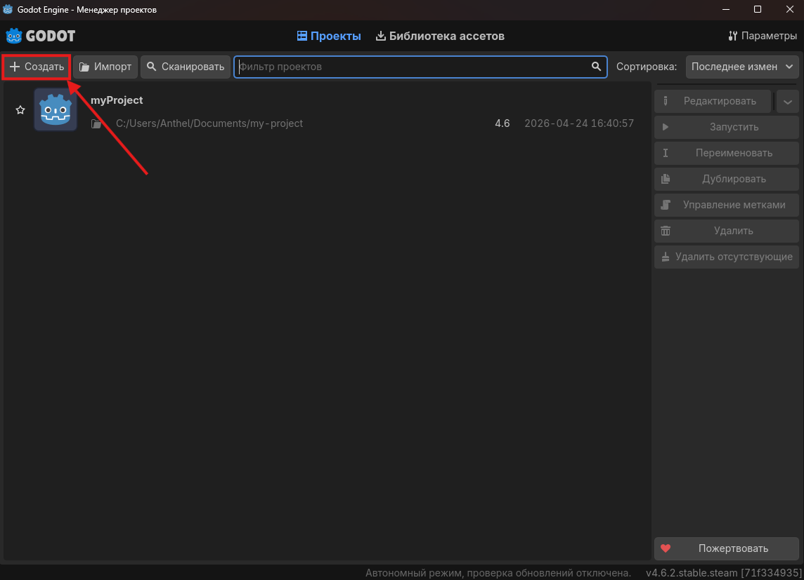
Все что нам осталось:
- Изменить имя проекта в верхнем окне.
- Установить Метаданные для управления версиями не Нет
Нам пока рано изучать гит, он будет нужен для сохранения нашего проекта онлайн
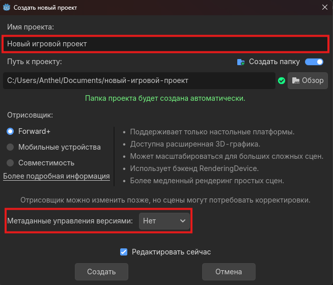
Сцена
Что это?
Основной концепт Godot заключается в том, что любой обьект в игре это отдельная сцена. Представьте что вы собираетесь делать свой мультик, вам отдельно нужно нарисовать персонажа, вещи, предметы, деревья и т.д. . После чего, вы просто объеденяете свои разработки в одной серии мультика, и переиспользуете персонажа вместо того чтобы заного его рисовать каждый раз.
Для чего делаем отдельные сцены?
- Персонаж
- Фон
- Предметы
- Враги
- Уровень
- Меню
- На самом деле для всего что может быть отдельно
Как создать сцену
После открытия нами только созданного проекта, нас встретит 3D окно. Нам нужен 2D уровень, поэтому создадим соответствующую сцену.
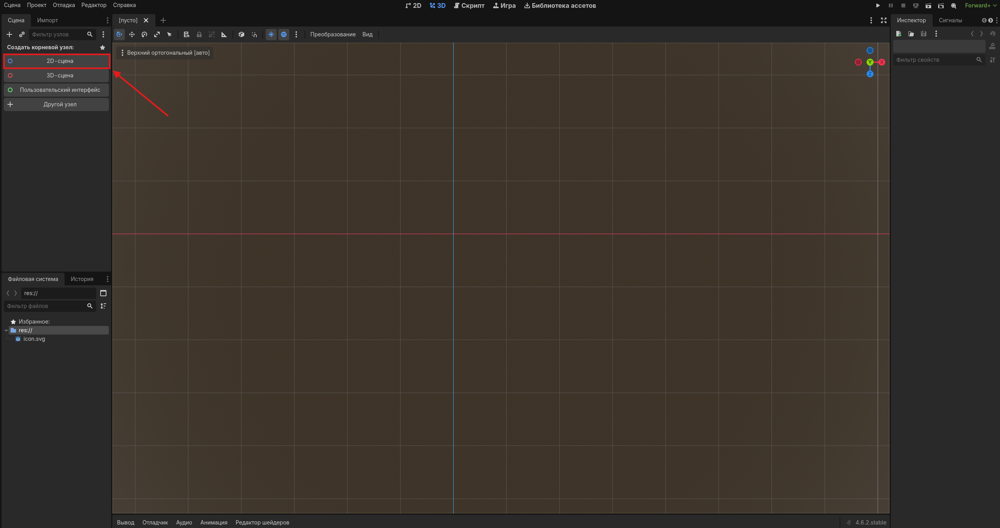
Созданная сцена откроета у нас как вкладка в браузере, и мы сможем переключатся между ними настраивая уровень и например врага.
Давайте сразу создадим несколько сцен, чтобы в дальнейшем связать их. Для этого нужно нажать на плюсик рядом с вкладками наших сцен.
Там же на скриноше подсвечен
Не забудьте сохранить сцену CTRL+S, и дать ей нужное название.
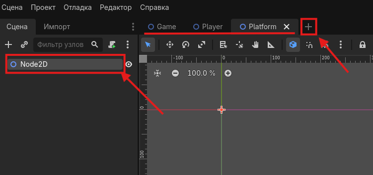
Узлы
Пример использования узлов
Узел - это частичка нашей сцены. При создании персонажа, нам будет необходимо настроить его вид, коллайдер*, камеру, и физику персонажа. Для этого мы и будем делать Node(узлы) взаимодействия нашей сцены с игрой.
Пример создания узла
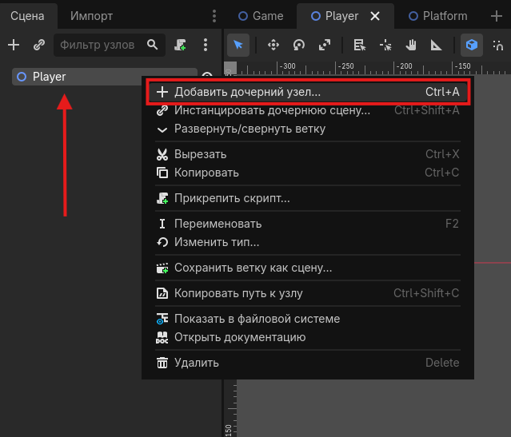
Нам необходимо настроить нашему персонажу:
- RigidBody2D - Эта настройка говорит что наше тело будет иметь физику. Падать, отпрыгивать и т.д.
- CollisionShape2D - Добавляя картинку, мы можем сделать нашему персонажу рожки например, но в игре нам не нужно чтобы мы цеплялись ими об все текстуры. Поэтому мы отдельно настраиваем область которая будет сталкиваться с остальными элементами игры, или если это предмет декора, вообще не взаимодействовать с персонажем.
- Sprite2D - Это и есть наша текстура.
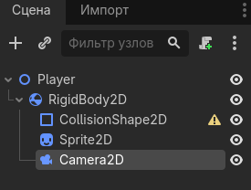
Настройка узла
Выберите необходимый узел для настройки в левом дереве узлов, и посмотрите на панель справа. В ней указаны все настройки выбранного узла на примере Sprite2D.
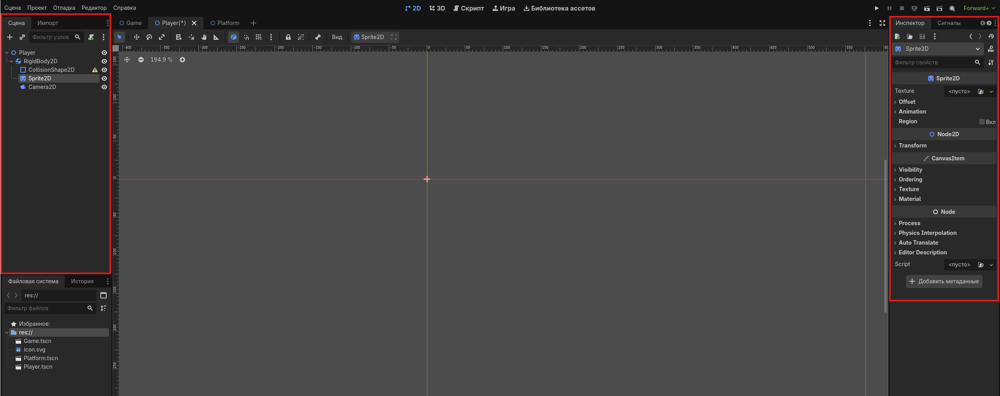
Теперь перейдем к настройке узлов персонажа.
Важные узлы нашего урока
Сейчас я покажу что нужно настроить и за что отвечают узлы
RigidBody2D
RigidBody2D - это настройка физики нашего объекта. По умолчанию, все объекты статичны как приклееные на экран стикеры. Но персонаж далжен перемещаться, падать с платформ, прыгать и толкать предметы. Поэтому мы должны дать понять что он физичен
Так же можно настроить его вес, и гравитацию, пока не трогайте это, но если захотите попробовать покрутите ползунки.
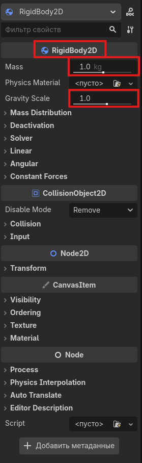
Sprite2D
Sprite2D - это узел который отвечает за картинку которую вы будете использовать для вашего объекта.
Ему нужно настроить только ссылку на картинку которую вы хотите использовать. Лучше использовать файлы типа svg, они не теряют качество в зависимости от размера. Так же, Godot не поддерживает jfif и другие мало используемые форматы изображений.
Нажимаем на папку с молнией и загружаем нужное изображение из файлов проекта. Если вы еще не знаете где они, прочитайте ниже, или используйте логотип годот который стоит по умолчанию.
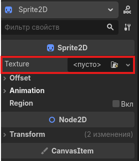
CollisionShape2D
CollisionShape2D - это узел, который отвечает за область столкновения объекта с другими. Нам не всегда нужно чтобы предмет мешал передвижению других. Например: трава не должна быть твердой как камень, и не должна сталкиваться с персонажем. И так же персонаж, чтобы нормально катался должен быть круглым, однако мы можем поставить другую текстуру и нам это будет мешать.
У вас будет как у Sprite2D, пустая папка, где уже на выбор можно взять готовые фигуры. Я на фото уже взял квадрат.
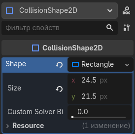
Так же хочу представить вам Савиню, главного персонажа курса по Godot. И сразу возьмем область колизии и подгоним под нее
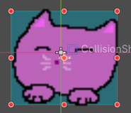
Вы видите что он немного смещен. Как я и говорил, коллизия игрока не всегда ровно совпадает с текстурой, поэтому мы делаем как считаем он должен касаться предметов.
Дерево файлов
Что это?
Как и в любой другой дисциплине у нас есть файлы которые мы будем использовать в проекте.
Единственное отличие что любая сцена тоже является файлом. И мы должны правильно организовать папки в нашем проекте.
Пример:
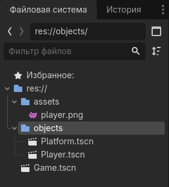
Мы сразу создаем папки для текстур, и для объектов. Оставляя в основной папке только сцену с игрой.
Это нужно для комфортного поиска объектов когда их станет очень много в нашей игре.
Основная сцена
Тут немножко самостоятельной работы.
Нужно сделать:
- Найти в вкладках сверху свою сцену Game
- В неё нужно загрузить из дерева файлов персонажей и наши платформы. Вытаскивайте файлы прямо на поле, старайтесь попасть в белый квадрат, это область камеры
- Нажать на вкладку пкм - запустить сцену - проверить результат
Домашние задание
Оценка на 12
- В сцене платформа создать платформу. Используя материал урока, повторить узлы персонажа. Добавить текстуру, коллайдер и т.д. Использовать вместо RigidBody2D - StaticBody2D --- 4 балла
- Создать три сцены указанные в уроке --- 2 балла
- Настроить дерево файлов --- 2 балла
- Настроить персонажа --- 4 балла
Важно
- Нормально назвать сцены
- Подобрать хорошие картинки для персонажа и платформ
- Переименовать узлы по названиям сцен
- Дополнительно но не на оценку, объеденить все на основной сцене
Как отправить результат:
- Архив с игрой
- Ввиде скриншота запущенной игры но на уроке нужно будет показать проект
Итог нашего занятия
Пока результат не выглядит так весело. Но мы с вами сделали первые шаги в понимании как создавать игры. Осталось только оживить немного наш мир.
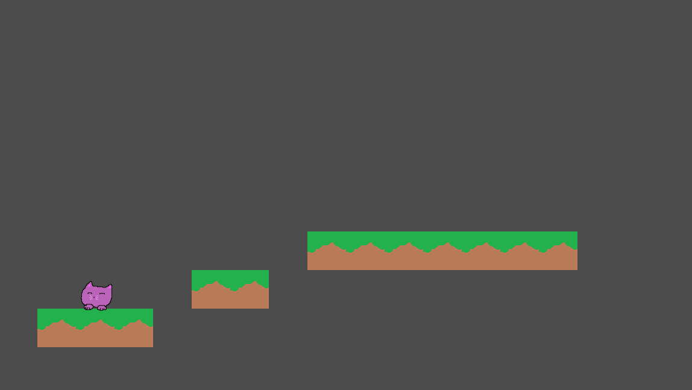